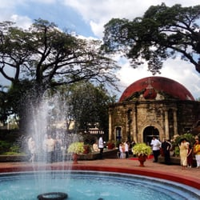
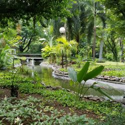
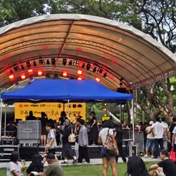

Looking for somewhere to slow down for a while?
Here are a few green spaces worth exploring for
picnics, walks, photos, and relaxing afternoons.
🧺 Salcedo Park
Food • Family • Weekend
⭐ 4.5 / 5
🕐 5:00 AM – 10:00 PM
Also known as Jaime C. Velasquez Park,
Salcedo Park is a compact green space in
Makati with a grassy area, walking paths,
playground, and seating. It is especially
lively on Saturdays because of the popular
Salcedo Weekend Market.
Best for: weekend picnics,
families, food trips, walks, and spending
a relaxed morning outdoors.

🌸 Paco Park
History • Quiet • Garden
⭐ 4.5 / 5
🕐 Usually 6:00/7:00 AM – 5:00 PM
Paco Park is a historic garden and former
cemetery in Manila. Its circular walls,
greenery, chapel, and peaceful garden
atmosphere make it a relaxing place to
explore away from the busy streets.
Best for: quiet walks,
photography, history lovers, and peaceful
afternoons.

🌿 Washington SyCip Park
Peaceful • Nature • Relax
⭐ 4.6 / 5
🕐 6:00 AM – 10:00 PM
Tucked among Makati's buildings, Washington
SyCip Park is known for its greenery,
walking paths, benches, shaded areas,
koi pond, and peaceful atmosphere.
It offers a refreshing break from the
surrounding business district.
Best for: reading,
walking, taking photos, relaxing,
and enjoying a quiet break.

🌼 Ayala Triangle Gardens
City • Greenery • Hangout
⭐ 4.6 / 5
🕐 6:00 AM – 10:00 PM
Ayala Triangle Gardens is a green oasis
in the middle of Makati's business district.
Its trees, gardens, open spaces, and
walkways provide a relaxing place to
spend time while still being close to
cafés and restaurants.
Best for: friends,
casual picnics, photos, relaxing,
and city sightseeing.